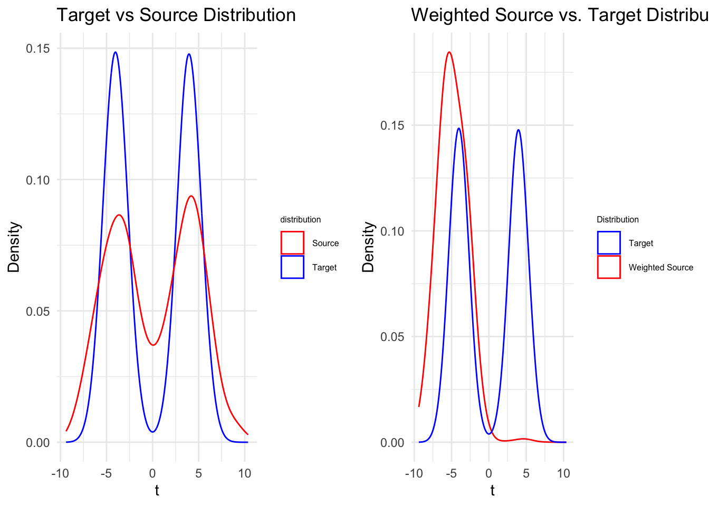

Estimator:
\(\mathbb{E}_{X \sim \mathbb{P}^{(0)}} [\Phi(X)] = \mathbb{E}_{X \sim \mathbb{P}^{(1)}} [\Phi(X)w(X)]\) for any appropriate “anchor” function \(\Phi\)
Anchor Function:
Consequence of Injection: If \(\tilde{w}: \chi \rightarrow \mathbb{R}_{+}\) satisfies \(\mathbb{E}_{X \sim \mathbb{P^{(1)}}} \tilde{w}(X) = 1\) and \(\mathbb{E}_{X \sim \mathbb{P}^{(0)}} [\Phi(X)] = \mathbb{E}_{X \sim \mathbb{P}^{(1)}} [\Phi(X)\tilde{w}(X)]\), then \(\tilde{w} = w\)
When \(\Phi(x) = K(., x)\) is a feature map of the Reproducing Kernel Hilbert Space (RKHS) induced by a universal kernel \(K, \mu: \mathbb{P} \mapsto \mathbb{E}_{X \sim \mathbb{P} \Phi(X)}\) is injective, i.e. \(\mathbb{P} \neq \mathbb{Q} \Rightarrow \mu(\mathbb{P}) \neq \mu(\mathbb{Q})\)
Practical Algorithm:
Requires \(\{x^{(k)}_{i}\}^{n_k}_{i=1}\) \(\overset{\mathrm{iid}}{\sim}\) \(\mathbb{P}^{(k)}\), \(\epsilon\), \(B > 0\) as input.
Solve \(min ||\frac{1}{n_1}\sum_{i=1}^{n_1} w_i \Phi(x_{i}^{(1)}) - \frac{1}{n_0} \sum_{i=1}^{n_0} \Phi(x_{i}^{(0)} ||^{2}_{\mathcal{H}}\)
s.t. \(w_i \in [0, B], |\frac{1}{n_1} \sum_{i=1}^{n_1}w_i - 1| \leq \epsilon\)
By Reproducing property, \(||\frac{1}{n_1}\sum_{i=1}^{n_1} w_i \Phi(x_{i}^{(1)}) - \frac{1}{n_0} \sum_{i=1}^{n_0} \Phi(x_{i}^{(0)} ||^{2}_{\mathcal{H}} = \frac{1}{n_{1}^{2}} w^{T} K w - \frac{2}{n_1} {\kappa}^{T}w + constant\), where \(\kappa_i = \frac{1}{n_0}\sum_{j=1}{n_0}K(x_{j}^{(0)}, x_{i}^{(1)})\). Hence it becomes a quadratic programming (QP) problem.
# Set seed for reproducibility
set.seed(123)
# Define dimensionality and direction vector
D <- 20
v <- seq_len(D) # Example: v = (1, 2, ..., 20)
# Number of samples
n_source <- 1000
n_target <- 1000
# Function to generate mixture of Gaussians
mix_2_gaussian <- function(n, means, sds) {
comps <- sample.int(2, size = n, replace = TRUE, prob = c(0.5, 0.5))
rnorm(n, mean = means[comps], sd = sds[comps])
}
# Generate source and target t values
source_t <- mix_2_gaussian(n_source, c(-4, 4), c(4, 4)) # Higher variance
target_t <- mix_2_gaussian(n_target, c(-4, 4), c(1, 1)) # Lower variance
# Embed t into D dimensions
X_source <- outer(source_t, v) # n_source x D
X_target <- outer(target_t, v) # n_target x D
###################################################################################################
# # Define RBF kernel function
# rbf_kernel <- function(x, y, sigma = 1) {
# exp(-sum((x - y)^2) / (2 * sigma^2))
# }
#
# # Compute the kernel matrix K (Source-to-Source) using vectorized operations
# compute_kernel_matrix_rbf <- function(X, sigma = 1) {
# # Compute pairwise squared Euclidean distances
# distance_sq <- as.matrix(dist(X, method = "euclidean"))^2
# # Compute RBF kernel
# K <- exp(-distance_sq / (2 * sigma^2))
# return(K)
# }
#
# # Compute K using RBF kernel
# sigma <- 5 # Initial sigma; to be tuned
# K <- compute_kernel_matrix_rbf(X_source, sigma)
#
# # Compute the k vector (Source-to-Target) using vectorized operations
# compute_k_vector_rbf <- function(X_target, X_source, sigma = 1) {
# # Compute cross pairwise squared Euclidean distances
# distance_sq <- proxy::dist(X_target, X_source, method = "euclidean")^2
# # Compute RBF kernel
# K_cross <- exp(-distance_sq / (2 * sigma^2))
# # Average over target samples
# k_vec <- colMeans(K_cross)
# return(k_vec)
# }
#
# # Compute k_vec using RBF kernel
# k_vec <- compute_k_vector_rbf(X_target, X_source, sigma)
###################################################################################################
linear_kernel <- function(x, y) {
sum(x * y)
}
# --------------------------
# 2) Compute K (source-to-source) with the linear kernel
# --------------------------
compute_linear_kernel_matrix <- function(X_source) {
# X_source is n_source x D
# We'll compute an n_source x n_source kernel matrix
# with K[i,j] = x_i · x_j
# Efficient approach: K = X_source %*% t(X_source)
K_lin <- X_source %*% t(X_source)
K_lin
}
K <- compute_linear_kernel_matrix(X_source)
# --------------------------
# 3) Compute k_vec (source-to-target) with the linear kernel
# --------------------------
compute_k_vector_linear <- function(X_target, X_source) {
# For each source row i, we want average dot product with all target rows
# i.e., k[i] = (1 / n_target) sum_j (x_i · x_j_target)
# We'll do this by matrix multiplication: X_source %*% t(X_target)
# Then average across target rows
cross_mat <- X_source %*% t(X_target) # (n_source x n_target)
# k_vec[i] = mean of cross_mat[i, ] over j
# So we want colMeans if cross_mat is transposed, or rowMeans if cross_mat is n_source x n_target
# cross_mat is n_source x n_target, so rowMeans => length n_source
k_lin <- rowMeans(cross_mat)
k_lin
}
k_vec <- compute_k_vector_linear(X_target, X_source)
# Define upper bound for weights
B <- 1000 # Adjust based on your requirements
# Number of source samples
n1 <- nrow(X_source)
lambda <- 1e-7
K_reg <- K + diag(lambda, nrow(K))
# Construct Dmat and dvec for quadprog
Dmat <- (2 / n1^2) * K_reg # Multiply by 2 due to quadprog's 1/2 factor
dvec <- (2 / n1) * k_vec
# Constraints:
# 1. sum(w) = 1 (equality)
# 2. 0 <= w_i <= B (inequality)
# Define epsilon for the "soft" sum constraint
epsilon <- 10 # for example
# 0) We already have n1 = number of source samples,
# B = upper bound, from your existing code
# 1) Build the inequality constraint matrix A_ineq, each row is one constraint
# Then remember quadprog wants A = t(A_ineq) in the end.
A_ineq <- rbind(
# (1) sum(w) >= n1(1 - epsilon) --> row is +1 +1 +1 ... +1
rep(1, n1),
# (2) sum(w) <= n1(1 + epsilon) --> row is -1 -1 -1 ... -1
-rep(1, n1),
# (3) w_i >= 0 --> rows of the identity matrix
diag(n1),
# (4) w_i <= B --> -w_i >= -B --> rows of -diag(n1)
-diag(n1)
)
# 2) Build the corresponding b_ineq
b_ineq <- c(
# (1) sum(w) >= n1(1 - epsilon)
n1 * (1 - epsilon),
# (2) sum(w) <= n1(1 + epsilon) => -sum(w) >= -n1(1+epsilon)
-n1 * (1 + epsilon),
# (3) w_i >= 0 => 0
rep(0, n1),
# (4) w_i <= B => -w_i >= -B
rep(-B, n1)
)
# 3) Transpose, because solve.QP expects A^T w >= b
Amat <- t(A_ineq)
bvec <- b_ineq
# 4) No equality constraints here => meq = 0
meq <- 0
# 5) Solve the QP
qp_solution <- solve.QP(Dmat, dvec, Amat, bvec, meq = meq)
# Extract the optimal weights
w_opt <- qp_solution$solution
w_opt[w_opt < 1e-12] <- 0
# Verify constraints
cat("Sum of weights:", sum(w_opt), "\n") # Should be ~1## Sum of weights: 11.0475cat("All weights >= 0:", all(w_opt >= 0), "\n") # Should be TRUE## All weights >= 0: TRUEcat("All weights <= B:", all(w_opt <= B), "\n") # Should be TRUE## All weights <= B: TRUE# Visualization: Weighted Source vs. Target Distribution
df_source_weighted <- data.frame(
t = source_t,
w = w_opt
)
df_target <- data.frame(t = target_t)
source_target <- ggplot() +
geom_density(data = df_target, aes(x = t, color = "Target")) +
geom_density(data = df_source_weighted, aes(x = t, color = "Source")) +
scale_color_manual(
name = "distribution", # this is the legend title
values = c("Target" = "blue",
"Source" = "red")
) +
labs(x = "t", y = "Density", title = "Target vs Source Distribution") +
theme_minimal() +
theme(
legend.title = element_text(size = 6), # Smaller legend title
legend.text = element_text(size = 6) # Smaller legend text
)
estimation_true <- ggplot() +
geom_density(data = df_source_weighted, aes(x = t, weight = w, color = "Weighted Source"), adjust = 1.5) +
geom_density(data = df_target, aes(x = t, color = "Target"), adjust = 1.5) +
scale_color_manual(
name = "Distribution",
values = c("Weighted Source" = "red", "Target" = "blue")
) +
labs(
x = "t",
y = "Density",
title = "Weighted Source vs. Target Distribution"
) +
theme_minimal() +
theme(
legend.title = element_text(size = 6), # Smaller legend title
legend.text = element_text(size = 6) # Smaller legend text
)
grid.arrange(source_target, estimation_true, ncol = 2)
In linear kernel, \(\Phi(x) = x\). So it’s reasonable to plot the raw input densities, but it’s also reasonable that they may not overlay perfectly. The real check is how well the weighted mean embeddings match(refer to Code Appendix section below)
For definition of kernel, universal kernel, etc; refer back to our slide.
Maximum Mean Discrepancy(MMD) gives a direct measure of how well Kernel Mean Matching (KMM) has aligned the mean embeddings in the feature space—even if the raw (weighted) distributions look different in input space.
compute_mmd2_weighted <- function(X_source, w_opt, X_target, kernel_func, ...) {
n_s <- nrow(X_source)
n_t <- nrow(X_target)
# Convert w -> alpha, i.e. alpha_i = w_i / n_s
alpha <- w_opt / n_s
# For target, each sample has weight = 1/n_t
beta <- rep(1 / n_t, n_t)
# We'll compute the 3 sums in the MMD^2 formula:
# sum_{i,i'} alpha_i alpha_i' K(x_i, x_i')
# sum_{j,j'} beta_j beta_j' K(y_j, y_j')
# sum_{i,j} alpha_i beta_j K(x_i, y_j)
# 1) Weighted source-source part
ss_sum <- 0
for (i in 1:n_s) {
for (i2 in 1:n_s) {
ss_sum <- ss_sum + alpha[i] * alpha[i2] * kernel_func(X_source[i,], X_source[i2,], ...)
}
}
# 2) Weighted target-target part
tt_sum <- 0
for (j in 1:n_t) {
for (j2 in 1:n_t) {
tt_sum <- tt_sum + beta[j] * beta[j2] * kernel_func(X_target[j,], X_target[j2,], ...)
}
}
# 3) Cross term: sum_{i,j} alpha_i beta_j K(x_i, y_j)
st_sum <- 0
for (i in 1:n_s) {
for (j in 1:n_t) {
st_sum <- st_sum + alpha[i] * beta[j] * kernel_func(X_source[i,], X_target[j,], ...)
}
}
# MMD^2 = ss_sum + tt_sum - 2 * st_sum
mmd2 <- ss_sum + tt_sum - 2 * st_sum
return(mmd2)
}
linear_kernel <- function(x, y) {
sum(x * y)
}
mmd2_val <- compute_mmd2_weighted(
X_source, w_opt, X_target,
kernel_func = linear_kernel
)
cat("MMD^2 between weighted source & target = ", mmd2_val, "\n")## MMD^2 between weighted source & target = 6.394885e-14cat("MMD = ", sqrt(mmd2_val), "\n")## MMD = 2.528811e-07Since \(MMD^2\)(=6.3948846^{-14}) is close to 0, we can say the weighted source and target distributions have very similar mean embeddings under the linear kernel.